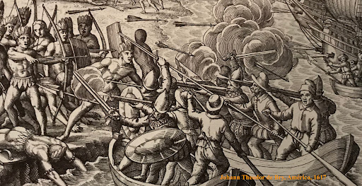
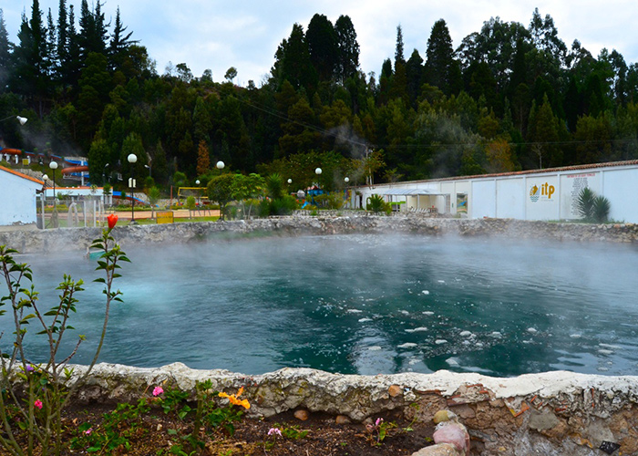

Desarrollado por
Juan Camilo Acosta

Paipa además de ser una tractivo turístico es un patrimonio histórico no solamente para Boyacá y Colombia sino también para el mundo debido a lo sucedido en el municipio en la campaña de independencia comandada por Simón Bolívar, que contrajo hechos como la batalla del Pantano de Vargas, una de las más importantes. Haremos un recorrido de orígenes y sucesos importantes que acontecieron en el municipio.
Paipa empieza a aparecer en la historia desde 1537, cuando el mariscal Gonzalo Jimenéez de Quesada, decidio relizar una campaña hacía un templo que era dedicado al sol localizado en Sogamoso para poder cabar con él, dado a que iba en contra de los principios del cristianismo oriundos de los conquistadores, en ese momento decidió descansar durante la travesía en Paipa. Posteriormente, en 15 de diciembre de 1539 se desató una de las batallas más sangrientas debido a enfrentamientos entre los conquistadores e indígenas de la provincia del Tundama. Ya teniendo conquistada la provincia, en 1602 se realiza la fundación de Paipa como urbanización y se utiliza como centro de adoctrinamiento para las tropas españolas., En 1755, Paipa es nombrado corregimiento ampliando funciones jurídicas como de reacudo para el fisco y se empiezan a nombrar los primeros corregidores y alcaldes de Paipa
El papel del municipio de Paipa en la campaña de independencia fue muy importante, dado que Barreiro, oriundo de Firavitoba, llega a Paipa el 18 d ejulio de 1819 a hacer reconocimiento en lo que actualmente hoy es la vereda de Bonza. Mientras tanto, Simón Bolívar logró hospedarse a Duitama para ir hacia Paipa a enfrentarse con Barreiro, así el clima no fuese el pertinente debido a que estaba lloviendo todos los días aumentando el caudal del río Chicamocha, que cruza por Paipa. Para cortar el avance del ejército realista, el ejercito patriota atacó en el Pantano de Vargas, una de las batallas más largas de la campaña en donde se decreta una memorable victoria por parte del ejecito colombiano el 25 de julio de 1819.
Ya siendo territorio independiente de la corona española, Paipa empieza a ser considerada como ciudad turística es en 1825, en donde se realiza el análisis de la composición del agua salina. En 1852 el gobierno de turno se comienza a interesar por las riquezas naturales y decide enviar una comisión geográfica dirigida por el general Agustín Codazzi. La construcción de la actual iglesia se lleva a cabo en 1906 para terminarse en 1920. Con el conocimiento de su riqueza en las aguas termo-minerales, se construyen las piscinas municipales en 1938 dando inicio a la conformación del cpmplejo turístico que en 1955 se refuerza con el lago Sochagota.
